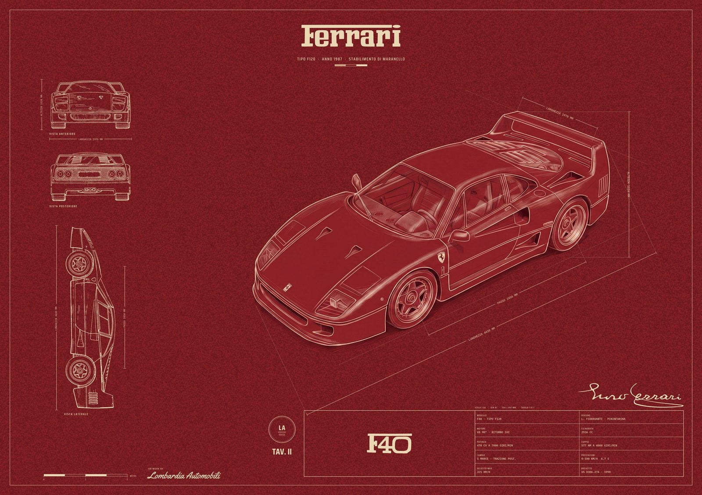

Lombardia Automobili · the house in one sitting
Review poster (Ossido F40, album A1), the typographic library, the car manifest, the profitability note and the pipeline note. Built 2026-09-03.
The poster
Tap a sheet for the full 9933 x 7016 file. Only the car is generated; every line, figure, letter and rule is drawn. Checks under each sheet are measured, not eyeballed.
{kind=link}

| size | 9933 x 7016 | pass |
| ratio | 1.4158 | pass |
| edge white % (t/b/l/r) | 0.0 / 0.0 / 0.0 / 0.0 | pass |
| edge mean rgb (top) | [120, 28, 33] | pass |
| car box vs source, % of sheet | x0 0.12 · y0 0.16 · x1 0.0 · y1 -0.17 · IoU 0.991 | pass |
| ground sampled from render | [139, 33, 39] | pass |
| library used | {"wordmark": "ferrari-wordmark-mask-4k.png", "model_asset": "f40-model-mask.png", "model_h": "253", "_library_entry": "Ferrari"} | pass |
Car candidates
Car-only generations from the prompt extracted out of gen 362. IoU is the car box against gen 362's own car box; stray ink is anything the model drew outside the car.


References the critics saw


Critics
Brief + System critic
Lens: every explicit instruction of the brief plus the fixed hard fails, checked per label at thumb, 2500 and 100 % (crops in hybrid-2026-09-03/crops/). Pixels are full-size (9933 x 7016). Measured, not eyeballed: edge bands, ground medians, ink medians, dimension-line lengths, car boxes.
Hard fails by label
- P — HF7: PASSO line 2960..4473 = 1513 px = 2562 mm at 1:20 against a 2450 label (+4.6 %); wheel-centre ink peaks 1550 px apart = 2625 mm. LUNGHEZZA line 2413..5040 = 2627 px = 4448 mm, honest. HF6 by the letter: three orthographic views plus a perspective (inherited from the picked composition, needs a ruling). Passes HF1 (door plate is four dots at 6830,2720; shield at 3200,4100 is a shape), HF2 (edges RGB 139/34/39 on all four sides, zero paper rows), HF3 (outer rule at 140 px, inset frame at 225 px = ossido
frame_inset84), HF5 marque (Ferrari asset at 3925..4900, 380..560), HF8 (imprint at ~3000..4200, 6420..6620). - Q — HF7 and HF6 as P (same apparatus). Composition hard fail: car box 2560..8600 x 1160..4960, 6 % shorter than P/R, different pose (front wheel ~500 px further right). Car overruns the PASSO row: generated body ink at y 2098, x 4740..5373. Ink fraction 13.5 % vs 4.1-4.3 % on P/R/T.
- R — HF1: legible generated lettering on the sheet ("Ferrari", "F40", "TIPO F120 · ANNO 1987 …", block labels) and garbled glyphs on door plate (6960,2740) and sill badge (7560,2990). HF3: generated dimension arrows around the car and elevations (e.g. 2200..3093 at y 1043; 2545..5193 at y 1707). HF7: no scale label at all; elevation lines carry no figures. HF8: no imprint (foot 400..4700 x 6350..6750 is bare ground). Marque is generated pixels, not the wordmark asset. No outer rule (corner 0..700 bare).
- S — HF2: paper band 141 px on every edge (RGB 238/232/216 — the blueprint
papertoken). Everything else honest: length 5112..5145 px = 4328..4356 mm at 1:10, PASSO line 2906 px = 2461 mm, marque asset, block, scale bar, imprint present. Off-brief: blueprint tokens (ground 18/58/110), not ossido; not the picked composition. - T — HF1: garbled glyph strings on the door plate (6830,2720: "⊏≡⊐ 8") and sill badge (7560,2990). HF3: generated line fragments on bare ground outside the car at (2580..2680, 3980..4010), (2980..3070, 4720..4750) and a long stroke at (4324..5080, 4806..5178). HF7 and HF6 as P.
Score table (1-5; weighted total, max 115)
| # | Criterion | W | P | Q | R | S | T |
|---|---|---|---|---|---|---|---|
| 1 | Reads as factory drawing at thumb | 3 | 4 | 3 | 4 | 5 | 4 |
| 2 | The car is right | 3 | 3 | 2 | 3 | 4 | 3 |
| 3 | Apparatus ours and honest | 3 | 3 | 3 | 1 | 5 | 3 |
| 4 | Paper and ink one material | 2 | 3 | 2 | 4 | 4 | 3 |
| 5 | Prints at A1 | 2 | 4 | 3 | 2 | 5 | 4 |
| 6 | On-collection | 2 | 4 | 2 | 3 | 1 | 3 |
| 7 | Would sell at EUR 100+ | 2 | 4 | 3 | 3 | 4 | 3 |
| 8 | Composition fidelity to picked sheet | 3 | 5 | 2 | 5 | 1 | 4 |
| 9 | Nothing generated but the car | 3 | 4 | 3 | 1 | 5 | 1 |
| Weighted total | 87 | 59 | 66 | 88 | 71 |
Cited pixels: crit 3 — LUNGHEZZA/PASSO rows y 1998/2098 (P,Q,T), R block 6600..9700 x 5300..6700 with empty cells and no SCALA; crit 4 — apparatus ink median 233/215/179 = token on P/Q/T, R ink 243/196/164 off-token, generated car line work 217/150/139 (pink-white, not bone) on P/T, 192/146/137 on Q; ground field median 119/29/33 on P/Q/T vs token 132/32/34 (−10 %), R field 133/32/34 exactly; crit 9 — P's only non-car mark is the pencil shadow under the sill at ~4300..5000 x 4800..5000.
Strongest objection per label
- P — the generated roof runs under the LUNGHEZZA right tick at (5030,1998): apparatus and car collide, and the PASSO line is 4.6 % long for its figure.
- Q — a sepia pencil rendering with a red-painted wing sits on an ossido sheet: wrong medium, wrong pose, 13.5 % ink.
- R — everything but the car is generated: arrows without figures, empty block cells, no scale, no imprint, generated marque.
- S — 141 px paper band on all four edges and the wrong collection for this brief.
- T — generated line fragments on bare ground at three places and garbled badge lettering.
Closest to lot-ready
P. One change: redraw the PASSO dimension to 1447 px (2450 mm at 1:20) between the traced wheel centres, or fix the traced figure so the label is true. Second, if allowed: drop the car 60-80 px so the roof clears the tick at (5030,1998).
What the rubric failed to capture
- HF6 (four orthographic views) contradicts the picked composition (three + perspective); every ossido candidate fails it by the letter. Founder's ruling needed.
- The generated car's own line colour vs the ink token (pink-white vs bone) has no criterion; it is why the car floats on P/T.
- Car-to-apparatus overlap (car crossing dimension rows) has no criterion.
- Ground vignette runs the wrong way on P/Q/T (edges 139, field 119); the field is 10 % darker than the token.
- Is a generated cast shadow "the car"? Unstated.
- Unverified: whether an F40 model wordmark asset exists (
cars.jsonlookup returned nothing), so HF5 on the typeset "F40" is open for P/Q/S/T; ossido fonts are not instyles.json, so font compliance was judged by identity with S.
Craft + Period critic
Blind. Every label at 300 px, 2500 px and 100 % crops of the 9933 px file (title block, elevations, wing, front wheel, header, edge, flank shield, nose badge, joins). Cites are full-file pixels.
Hard fails by label
- P, T, R — garbled micro-lettering in generated art: nose badge is rectangle + horse + two illegible text rows, P at (3110–3220, 4025–4130), ~8 mm at A1. Same car in all three.
- Q — same fault, nose badge (3393–3513, 3897–4000).
- R — also: model-drawn arrowed dimension lines, no figures, crossing ground and front elevation (2086–3973, 4072–5562); garbled "GHEEEB" on the rear elevation tail (1590–1710, 2255–2280); no imprint; no scale bar; generated frame. Fixed 1, 3, 8 and brief 9.
- S — paper-coloured band on all four edges, 138 px, RGB 238/232/216; blue, four orthographic views, no three-quarter car. Brief edge law and car-box law.
- Flagged, not failed (P, Q, T) — SCALA 1:20 label; PASSO line 1513 px = 128.1 mm → 1:19.1 (4.5 % off); run
verify-sheet.py. "F40" in a geometric sans beside the Ferrari wordmark; unverified whether an F40 logotype asset exists.
Score table (1–5, weight in brackets)
| # | Criterion | P | Q | R | S | T |
|---|---|---|---|---|---|---|
| 1 | Factory drawing at thumbnail [3] | 4 | 3 | 4 | 5 | 4 |
| 2 | The car is right [3] | 4 | 2 | 4 | 4 | 4 |
| 3 | Apparatus ours and honest [3] | 4 | 4 | 1 | 5 | 4 |
| 4 | Paper and ink one material [2] | 4 | 2 | 4 | 5 | 4 |
| 5 | Prints at A1 [2] | 4 | 3 | 2 | 4 | 4 |
| 6 | On-collection [2] | 5 | 3 | 4 | 1 | 5 |
| 7 | Sells at EUR 100+ [2] | 4 | 3 | 4 | 4 | 4 |
| 8 | Composition fidelity [3] | 5 | 2 | 5 | 1 | 4 |
| 9 | Nothing generated but the car [3] | 3 | 4 | 1 | 5 | 2 |
| Weighted total /115 | 94 | 67 | 73 | 88 | 88 |
Cites. P/T/R car, period parts present and right: five-spoke star wheel (4867–5761, 3774–4768); closed pop-up pods; bonnet, door and rear-quarter ducts; louvred Lexan cover and end-plated wing (6456–8592, 1068–2235); flank shield (5463–7201, 3228–3874); twin round lamps in mesh on the drawn rear elevation. Two domes under the Lexan read as garbled engine detail (7405–7761, 1969–2100). P crit. 9: one hairline crosses the front tyre to the ground (5340, 4620–4694). T crit. 9: that plus fragments below the nose (2982–3092, 4685–4745) and off the wing (6456–7120, 1068–1281; 8472–8592, 1602–1637); car a few px off P's. Q crit. 2/4: cream pencil hatch on oxide, flat red wing face and side lamp (8250–8650, 2250–2550), hatch shadow spilling onto paper under the tyres (5364–6456, 4370–4966); ink 14.4 % vs P 4.7 %. R crit. 5: block type and frame soft at 100 %. S crit. 5: traced lines stair-step at 100 %. Typography P/Q/T: wordmark and F40 on one baseline within ~5 px, legible at 300 px. Frame is two machine-perfect rules (138, 224 px) on grained paper; edges 138 px all sides.
Strongest objection per label
- P — one generated hairline still cuts the front tyre and touches the ground (5340, 4620–4694); plus badge micro-text.
- Q — the car changed material and colour: cream pencil on oxide with flat red patches; a different drawing, not this sheet's ink.
- R — the apparatus is the model's: arrowed dimensions without figures, a garbled word on the tail, no imprint, no scale bar.
- S — cream band on every edge and the wrong collection; superb apparatus on the wrong sheet.
- T — P's car, shifted and dirtier: four leftover dimension-line fragments.
Closest to lot-ready
P. One change: erase the hairline at (5340, 4620–4694) and flatten the nose badge to rectangle + horse, no text rows. Then re-measure the scale label.
What the rubric failed to capture
The see-through roof (cutaway vs error). Whether two perfect rules are one frame. No size threshold for micro-lettering, so an 8 mm badge and a 60 mm tail word fail alike. Scale-label tolerance. Ink density is not measurable from a JPEG as the rubric assumes. The elevations' print quality is never scored apart from the car.
Market critic (blind)
Judged as a Catawiki Automobilia / Posters buyer would: grid thumb, then the 2500 px lot photo, then 100% crops of the hero car and title block.
| Label | List? | Hammer band (EUR) | Defect a bidder would photograph | Reads as (thumb) |
|---|---|---|---|---|
| P | Yes, but only one of P/T (same sheet, different car pass) | 35-55 | Blocky upscaled-looking noise mottle in the field at 100%; airbrush gloss and light streaks clash with the line views | Machine-made poster with a rendered car |
| Q | Yes, with caution | 30-50 | Two media on one sheet: pink pencil car on red, wing interior dropping to dark red like a paste-in; can read as a colourised photo | Drawn (pencil sketch) - strongest hand signal of the five |
| R | Yes | 45-70 | Dimension arrows across the hero car carry no values; large empty top-left margin | Drawn engineering sheet - corner title block and dimensioning sell it |
| S | Marginal | 20-40 | Stair-stepped bitmap-traced lines at 100%; oversized top view with odd proportions; indistinguishable from the blue Shmidt.Art genre it competes with | Machine-made blueprint print (accepted genre look) |
| T | No - duplicate of P | 35-55 | Same field mottle and gloss clash as P | Same as P |
Title blocks are crisp and correct for an F40 on all five; the seam is always the hero car, never the apparatus.
Ranking
- R - the only one that reads as a sheet rather than a poster at 300 px; the corner title block and dimensioned iso view are what garage and office buyers frame.
- P - the safest icon lot (red field, big F40); loses to R because it reads as a rendered poster.
- Q - stands out in the grid as a drawing, which is worth money, but the pink tone risks reading as a faded photo.
- T - P again; listing both invites a "same lot twice" complaint and splits bids.
- S - competes head-on with the blue genre median at EUR 40 with worse line quality.
The one change for R
Put the values on the dimension lines (LUNG. 4430, LARG. 1970, ALT. 1124, PASSO 2450 at their arrows). An undimensioned dimension line is the first thing a technically literate bidder screenshots, and a dimensioned iso is what separates the EUR 60-111 lots from the EUR 40 median.
Typographic library
Typography — marque wordmarks, model lettering, colours, rights
Human index of marques/typography.json (schema 1.0, written 2026-09-03). The JSON is the single data source; lombardia/typelib.py reads it (lookup, for_car, entries). Adding a marque = one JSON entry. Masks are white lettering on black; luminance is alpha.
Status: ready = period-plausible wordmark mask at print size · partial = an asset with a stated flaw · missing = no asset (typeface + rights filled).
| marque | status | wordmark mask (px) | period | model masks | licence (short) |
|---|---|---|---|---|---|
| alfa Alfa Romeo | missing | — | 1960s Alfa Romeo: the biscione/cross roundel carries 'ALFA ROMEO' in caps; there is no separate period wordmar | — | — |
| audi Audi | ready | audi-wordmark-mask.png 3999x1063 |
'Audi' text wordmark (the same letterforms the 1978-95 black oval carried, which is also on Commons as a PD ve | quattro-model-mask.png |
Public domain |
| bmw BMW | partial | — | BMW has no standalone text wordmark; the roundel (1970-89 cut on Commons, PD) carries the letters. The M trico | — | Public domain |
| bugatti Bugatti | partial | — | The EB oval (red, pearled border, BUGATTI caps) is on Commons as a PD vector - the badge the EB110 (1991-95) w | — | Public domain |
| citroen Citroën | partial | — | Citroën's mark is the double chevron; the 1959-66 chevrons-on-shield is on Commons (PD). The word CITROËN in p | 2cv-model-mask.png |
Public domain |
| cizeta Cizeta | missing | — | Nothing on Commons: 'Cizeta logo' returns no files. The V16T wore a 'Cizeta-Moroder' script badge | — | — |
| delorean DeLorean | ready | delorean-wordmark-mask.png 4000x464 |
'DeLorean' rear-fascia lettering as on the DMC-12 (1981-83) - period-correct; the DMC block badge is separate | delorean-wordmark-mask.png |
Public domain |
| dodge Dodge | ready | dodge-wordmark-mask.png 4000x433 |
1993 DODGE wordmark (extended caps) - period-correct for the RT/10 Viper (1992-95) | — | Public domain |
| ferrari Ferrari | ready | ferrari-wordmark-mask-4k.png 4000x881 |
Ferrari slab logotype (block letters with the F overbar), in this form since the 1950s and correct for the F40 | f40-model-mask.png |
Public domain |
| fiat Fiat | ready | fiat-wordmark-mask.png 3439x567 |
1968 FIAT wordmark (white letters knocked out of the field) - period-correct for the 500 F | — | public domain per MANIFEST.csv |
| ford Ford | ready | ford-wordmark-mask.png 3969x1663 |
1961-65 Ford oval - period-correct for the 1965 Mustang and the GT40; the 1976 oval (below) is the Escort RS C | cosworth-model-mask.png |
public domain per MANIFEST.csv |
| honda Honda / Acura | ready | honda-wordmark-mask.png 3974x484 |
HONDA wordmark (the current cut; letterforms unchanged since the 1980s) - NSX 1990-2005 wore Honda in JP/EU an | — | Public domain |
| isdera Isdera | partial | isdera-wordmark-mask.png 3984x858 |
Isdera stencil wordmark (PD vector, from isdera.com) - the current company mark; whether the 1984-93 Imperator | — | Public domain |
| jaguar Jaguar | ready | jaguar-wordmark-mask.png 4000x1211 |
1966 JAGUAR wordmark - period-correct for the E-Type S1; the 1982 wordmark (below) is the XJ220-era cut | — | Public domain |
| lamborghini Lamborghini | ready | lamborghini-wordmark-mask.png 4000x510 |
1974 'Lamborghini' wordmark - period-correct for the Countach LP400; the Miura (1966-73) wore the script 'Lamb | — | public domain per MANIFEST.csv |
| lancia Lancia | partial | lancia-wordmark-mask.png 3958x406 |
2023 LANCIA wordmark (Stellantis relaunch) - period-WRONG for the Stratos (1974) and Delta Integrale (1987-94) | — | Public domain |
| landrover Land Rover | ready | landrover-wordmark-mask.png 4000x2097 |
1978 green oval with LAND ROVER caps - the mark the Defender wore from 1983/1990 on; period-correct | — | Public domain |
| lotus Lotus | missing | — | Lotus roundel (ACBC monogram in a green/yellow disc) and the 'Lotus' script - no PD vector on Commons: searche | — | — |
| mazda Mazda | partial | — | 1992 Mazda badge (the 'wing' emblem over the lowercase-style 'mazda' wordmark) - period-correct for the FD RX- | — | Public domain |
| mclaren McLaren | partial | mclaren-wordmark-mask.png 3999x367 |
McLaren wordmark 'since 2003' per Commons - period-WRONG for the F1 (1992-98), which wore the McLaren Cars kiw | — | Public domain |
| mercedes Mercedes-Benz | partial | mercedes-wordmark-mask.png 3996x460 |
Current 'Mercedes-Benz' serif wordmark (Corporate A lettering, 1990s onward). The W113 Pagoda (1963-71) wore o | — | Public domain |
| mini Mini (Austin / Morris / BMC) | partial | — | The 1969-2001 'MINI' shield/wings badge is on Commons (PD); a Mk I Cooper S (1963-67) wore Austin or Morris ba | — | Public domain |
| mitsubishi Mitsubishi | partial | — | Mitsubishi Motors three-diamond badge with MITSUBISHI MOTORS caps beneath (PD vector, vertical lockup) - rende | — | Public domain |
| nissan Nissan | partial | nissan-wordmark-mask.png 3781x725 |
Nissan 1983-2002 lockup (NISSAN caps knocked out of the blue field, with the small red/white badge) - period-c | — | Public domain |
| peugeot Peugeot | partial | peugeot-wordmark-mask.png 3972x357 |
Current PEUGEOT wordmark (2010 cut, 'ohne Löwe') - period-WRONG for the 205 GTI (1984-94), which wore the 1975 | — | Public domain |
| porsche Porsche | ready | porsche-wordmark-mask-4k.png 3846x264 |
PORSCHE wordmark - custom lettering since Erich Strenger (1950s), Porsche Franklin Gothic era; the Commons vec | porsche-script-mask.png |
Public domain |
| renault Renault | ready | renault5-wordmark-mask.png 4000x880 |
'RENAULT 5' lockup from a period brochure (PD vector) - condensed caps with the big 5; the R5 Turbo (1980-84) | renault5-wordmark-mask.png |
Public domain |
| shelby Shelby / AC | missing | — | 1965 Cobra badge: 'COBRA' block caps in a red-and-white roundel with the coiled snake; Shelby American script | — | — |
| subaru Subaru | ready | subaru-wordmark-mask.png 3859x509 |
SUBARU wordmark (extended caps) - the same lettering the Impreza wore in 1998 | impreza-model-mask.png |
Public domain |
| toyota Toyota | ready | toyota-wordmark-mask.png 3970x702 |
TOYOTA wordmark (in use since 1977 per the file description) - period-correct for the A80 Supra (1993-2002); t | — | Public domain |
| vector Vector Aeromotive | missing | — | Vector's italic 'VECTOR' badge exists on Commons only as a photograph (File:Vector W8 car badge.jpg, CC BY-SA | — | — |
| volkswagen Volkswagen | partial | — | Volkswagen has no text wordmark on its cars; the mark is the VW roundel (pre-1995 cut on Commons, PD). 'VOLKSW | — | Public domain |
Rights, one line per marque
- alfa — ALFA ROMEO, GIULIA, GTA is a live registered trademark of Stellantis N.V.. Letterforms of a typeface are not copyrightable (EU/US); a pre-1929 mark's artwork may be public domain as artwork while the trademark stays live. Reproducing the logotype on a poster offered for sale on Catawiki is trademark use without licence - the exposure the founder accepted knowingly (PLAYBOOK).
- audi — AUDI, the rings, QUATTRO is a live registered trademark of AUDI AG. Letterforms of a typeface are not copyrightable (EU/US); a pre-1929 mark's artwork may be public domain as artwork while the trademark stays live. Reproducing the logotype on a poster offered for sale on Catawiki is trademark use without licence - the exposure the founder accepted knowingly (PLAYBOOK).
- bmw — BMW, the roundel, M, M3 is a live registered trademark of BMW AG. Letterforms of a typeface are not copyrightable (EU/US); a pre-1929 mark's artwork may be public domain as artwork while the trademark stays live. Reproducing the logotype on a poster offered for sale on Catawiki is trademark use without licence - the exposure the founder accepted knowingly (PLAYBOOK).
- bugatti — BUGATTI, EB110 is a live registered trademark of Bugatti Rimac. Letterforms of a typeface are not copyrightable (EU/US); a pre-1929 mark's artwork may be public domain as artwork while the trademark stays live. Reproducing the logotype on a poster offered for sale on Catawiki is trademark use without licence - the exposure the founder accepted knowingly (PLAYBOOK).
- citroen — CITROËN, chevrons, 2CV is a live registered trademark of Stellantis N.V.. Letterforms of a typeface are not copyrightable (EU/US); a pre-1929 mark's artwork may be public domain as artwork while the trademark stays live. Reproducing the logotype on a poster offered for sale on Catawiki is trademark use without licence - the exposure the founder accepted knowingly (PLAYBOOK).
- cizeta — CIZETA: trademark status not verified; the founder Claudio Zampolli died 2021 and the company's marks may be unregistered or lapsed - still record as a live-risk mark until checked.
- delorean — DELOREAN, DMC - ownership of the marks has been litigated; treat as live is a live registered trademark of DeLorean Motor Company (successor entity). Letterforms of a typeface are not copyrightable (EU/US); a pre-1929 mark's artwork may be public domain as artwork while the trademark stays live. Reproducing the logotype on a poster offered for sale on Catawiki is trademark use without licence - the exposure the founder accepted knowingly (PLAYBOOK).
- dodge — DODGE, VIPER is a live registered trademark of Stellantis N.V. (Dodge). Letterforms of a typeface are not copyrightable (EU/US); a pre-1929 mark's artwork may be public domain as artwork while the trademark stays live. Reproducing the logotype on a poster offered for sale on Catawiki is trademark use without licence - the exposure the founder accepted knowingly (PLAYBOOK).
- ferrari — FERRARI (word and logotype) and the prancing horse is a live registered trademark of Ferrari S.p.A.. Letterforms of a typeface are not copyrightable (EU/US); a pre-1929 mark's artwork may be public domain as artwork while the trademark stays live. Reproducing the logotype on a poster offered for sale on Catawiki is trademark use without licence - the exposure the founder accepted knowingly (PLAYBOOK).
- fiat — FIAT is a live registered trademark of Stellantis N.V.. Letterforms of a typeface are not copyrightable (EU/US); a pre-1929 mark's artwork may be public domain as artwork while the trademark stays live. Reproducing the logotype on a poster offered for sale on Catawiki is trademark use without licence - the exposure the founder accepted knowingly (PLAYBOOK).
- ford — FORD, the oval, MUSTANG, GT40, ESCORT, RS; COSWORTH is Cosworth Group's is a live registered trademark of Ford Motor Company. Letterforms of a typeface are not copyrightable (EU/US); a pre-1929 mark's artwork may be public domain as artwork while the trademark stays live. Reproducing the logotype on a poster offered for sale on Catawiki is trademark use without licence - the exposure the founder accepted knowingly (PLAYBOOK).
- honda — HONDA, ACURA, NSX is a live registered trademark of Honda Motor Co., Ltd.. Letterforms of a typeface are not copyrightable (EU/US); a pre-1929 mark's artwork may be public domain as artwork while the trademark stays live. Reproducing the logotype on a poster offered for sale on Catawiki is trademark use without licence - the exposure the founder accepted knowingly (PLAYBOOK).
- isdera — ISDERA is a live registered trademark of Isdera AG. Letterforms of a typeface are not copyrightable (EU/US); a pre-1929 mark's artwork may be public domain as artwork while the trademark stays live. Reproducing the logotype on a poster offered for sale on Catawiki is trademark use without licence - the exposure the founder accepted knowingly (PLAYBOOK).
- jaguar — JAGUAR, the leaper, E-TYPE, XJ220 is a live registered trademark of Jaguar Land Rover Ltd.. Letterforms of a typeface are not copyrightable (EU/US); a pre-1929 mark's artwork may be public domain as artwork while the trademark stays live. Reproducing the logotype on a poster offered for sale on Catawiki is trademark use without licence - the exposure the founder accepted knowingly (PLAYBOOK).
- lamborghini — LAMBORGHINI, the bull, COUNTACH, MIURA is a live registered trademark of Automobili Lamborghini S.p.A.. Letterforms of a typeface are not copyrightable (EU/US); a pre-1929 mark's artwork may be public domain as artwork while the trademark stays live. Reproducing the logotype on a poster offered for sale on Catawiki is trademark use without licence - the exposure the founder accepted knowingly (PLAYBOOK).
- lancia — LANCIA, STRATOS, DELTA, HF is a live registered trademark of Stellantis N.V.. Letterforms of a typeface are not copyrightable (EU/US); a pre-1929 mark's artwork may be public domain as artwork while the trademark stays live. Reproducing the logotype on a poster offered for sale on Catawiki is trademark use without licence - the exposure the founder accepted knowingly (PLAYBOOK).
- landrover — LAND ROVER, DEFENDER is a live registered trademark of Jaguar Land Rover Ltd.. Letterforms of a typeface are not copyrightable (EU/US); a pre-1929 mark's artwork may be public domain as artwork while the trademark stays live. Reproducing the logotype on a poster offered for sale on Catawiki is trademark use without licence - the exposure the founder accepted knowingly (PLAYBOOK).
- lotus — LOTUS, ESPRIT is a live registered trademark of Lotus Cars Ltd.. Letterforms of a typeface are not copyrightable (EU/US); a pre-1929 mark's artwork may be public domain as artwork while the trademark stays live. Reproducing the logotype on a poster offered for sale on Catawiki is trademark use without licence - the exposure the founder accepted knowingly (PLAYBOOK).
- mazda — MAZDA, RX-7 is a live registered trademark of Mazda Motor Corporation. Letterforms of a typeface are not copyrightable (EU/US); a pre-1929 mark's artwork may be public domain as artwork while the trademark stays live. Reproducing the logotype on a poster offered for sale on Catawiki is trademark use without licence - the exposure the founder accepted knowingly (PLAYBOOK).
- mclaren — McLAREN is a live registered trademark of McLaren Group Ltd.. Letterforms of a typeface are not copyrightable (EU/US); a pre-1929 mark's artwork may be public domain as artwork while the trademark stays live. Reproducing the logotype on a poster offered for sale on Catawiki is trademark use without licence - the exposure the founder accepted knowingly (PLAYBOOK).
- mercedes — MERCEDES-BENZ, the star, SL is a live registered trademark of Mercedes-Benz Group AG. Letterforms of a typeface are not copyrightable (EU/US); a pre-1929 mark's artwork may be public domain as artwork while the trademark stays live. Reproducing the logotype on a poster offered for sale on Catawiki is trademark use without licence - the exposure the founder accepted knowingly (PLAYBOOK).
- mini — MINI is a live registered trademark of BMW AG. Letterforms of a typeface are not copyrightable (EU/US); a pre-1929 mark's artwork may be public domain as artwork while the trademark stays live. Reproducing the logotype on a poster offered for sale on Catawiki is trademark use without licence - the exposure the founder accepted knowingly (PLAYBOOK).
- mitsubishi — MITSUBISHI, LANCER, EVOLUTION is a live registered trademark of Mitsubishi Motors Corporation. Letterforms of a typeface are not copyrightable (EU/US); a pre-1929 mark's artwork may be public domain as artwork while the trademark stays live. Reproducing the logotype on a poster offered for sale on Catawiki is trademark use without licence - the exposure the founder accepted knowingly (PLAYBOOK).
- nissan — NISSAN, SKYLINE, GT-R is a live registered trademark of Nissan Motor Co., Ltd.. Letterforms of a typeface are not copyrightable (EU/US); a pre-1929 mark's artwork may be public domain as artwork while the trademark stays live. Reproducing the logotype on a poster offered for sale on Catawiki is trademark use without licence - the exposure the founder accepted knowingly (PLAYBOOK).
- peugeot — PEUGEOT, 205, GTI is a live registered trademark of Stellantis N.V.. Letterforms of a typeface are not copyrightable (EU/US); a pre-1929 mark's artwork may be public domain as artwork while the trademark stays live. Reproducing the logotype on a poster offered for sale on Catawiki is trademark use without licence - the exposure the founder accepted knowingly (PLAYBOOK).
- porsche — PORSCHE, the crest, 911, Carrera, Turbo and the model scripts is a live registered trademark of Dr. Ing. h.c. F. Porsche AG. Letterforms of a typeface are not copyrightable (EU/US); a pre-1929 mark's artwork may be public domain as artwork while the trademark stays live. Reproducing the logotype on a poster offered for sale on Catawiki is trademark use without licence - the exposure the founder accepted knowingly (PLAYBOOK).
- renault — RENAULT, 5, TURBO is a live registered trademark of Renault S.A.. Letterforms of a typeface are not copyrightable (EU/US); a pre-1929 mark's artwork may be public domain as artwork while the trademark stays live. Reproducing the logotype on a poster offered for sale on Catawiki is trademark use without licence - the exposure the founder accepted knowingly (PLAYBOOK).
- shelby — COBRA / SHELBY / AC is a live registered trademark of Carroll Shelby Licensing Inc. (Shelby, Cobra, the snake) and AC Cars Ltd.. Letterforms of a typeface are not copyrightable (EU/US); a pre-1929 mark's artwork may be public domain as artwork while the trademark stays live. Reproducing the logotype on a poster offered for sale on Catawiki is trademark use without licence - the exposure the founder accepted knowingly (PLAYBOOK).
- subaru — SUBARU, IMPREZA, WRX, STI is a live registered trademark of Subaru Corporation. Letterforms of a typeface are not copyrightable (EU/US); a pre-1929 mark's artwork may be public domain as artwork while the trademark stays live. Reproducing the logotype on a poster offered for sale on Catawiki is trademark use without licence - the exposure the founder accepted knowingly (PLAYBOOK).
- toyota — TOYOTA, SUPRA is a live registered trademark of Toyota Motor Corporation. Letterforms of a typeface are not copyrightable (EU/US); a pre-1929 mark's artwork may be public domain as artwork while the trademark stays live. Reproducing the logotype on a poster offered for sale on Catawiki is trademark use without licence - the exposure the founder accepted knowingly (PLAYBOOK).
- vector — VECTOR is a live registered trademark of Vector Motors Corporation. Letterforms of a typeface are not copyrightable (EU/US); a pre-1929 mark's artwork may be public domain as artwork while the trademark stays live. Reproducing the logotype on a poster offered for sale on Catawiki is trademark use without licence - the exposure the founder accepted knowingly (PLAYBOOK).
- volkswagen — VW roundel, VOLKSWAGEN, BEETLE/KÄFER is a live registered trademark of Volkswagen AG. Letterforms of a typeface are not copyrightable (EU/US); a pre-1929 mark's artwork may be public domain as artwork while the trademark stays live. Reproducing the logotype on a poster offered for sale on Catawiki is trademark use without licence - the exposure the founder accepted knowingly (PLAYBOOK).
Colours
Hex values are only as good as their verified note in the JSON; wiki infobox values were fetched, palette-site values are third-party, 'unverified' came from a search summary.
- alfa: rosso_alfa #971B29 — Alfa red (brand); national #E4002B — Rosso corsa
- audi: national (no hex) — German racing silver / white (Silver Arrows) - no hex on the source
- bmw: m_blue #008AC9 — M light blue; m_purple #2B115A — M dark blue/purple; m_red #F11A22 — M red; national (no hex) — German racing silver / white (Silver Arrows) - no hex on the source
- bugatti: bugatti_blue #318CE7 — Bleu de France (national racing blue, not a brand colour)
- citroen: national #318CE7 — Bleu de France (national racing blue, not a brand colour)
- cizeta: national #E4002B — Rosso corsa
- delorean: stainless (no hex) — brushed stainless (no paint colour) - n/a
- dodge: viper_red (no hex) — Viper Red - not sourced this session; national (no hex) — US racing white with blue stripes - no hex on the source
- ferrari: rosso_corsa #E4002B — Rosso corsa; giallo_logo #FFF200 — Ferrari shield yellow (logo); giallo_modena_paint (no hex) — Giallo Modena (paint) - hex differs by source (#FCE903 vs #E66B00-type values); not resolved
- fiat: national #E4002B — Rosso corsa
- ford: ford_blue #003478 — Ford blue (Pantone 294 C reported); national (no hex) — US racing white with blue stripes - no hex on the source
- honda: national (no hex) — Japanese racing ivory white with red disc - no hex on the source
- isdera: national (no hex) — German racing silver / white (Silver Arrows) - no hex on the source
- jaguar: brg #004225 — British racing green
- lamborghini: giallo #D8A016 — badge gold ('Goldenrod' on the palette site) - Lamborghini's giallo paint is a different, brighter yellow; national #E4002B — Rosso corsa
- lancia: lancia_blue (no hex) — Lancia shield blue - not sourced this session; national #E4002B — Rosso corsa
- landrover: lr_green (no hex) — Land Rover oval green (the vector's own fill can be sampled) - not sourced this session; brg #004225 — British racing green
- lotus: brg #004225 — British racing green; lotus_yellow (no hex) — roundel yellow - not sourced this session
- mazda: national (no hex) — Japanese racing ivory white with red disc - no hex on the source
- mclaren: papaya (no hex) — McLaren papaya orange - not sourced this session; brg #004225 — British racing green
- mercedes: national (no hex) — German racing silver / white (Silver Arrows) - no hex on the source
- mini: brg #004225 — British racing green
- mitsubishi: national (no hex) — Japanese racing ivory white with red disc - no hex on the source
- nissan: bayside_blue (no hex) — Bayside Blue (TV2) - not sourced this session; national (no hex) — Japanese racing ivory white with red disc - no hex on the source
- peugeot: national #318CE7 — Bleu de France (national racing blue, not a brand colour)
- porsche: crest (no hex) — Stuttgart crest red/black/gold - not sourced this session; national (no hex) — German racing silver / white (Silver Arrows) - no hex on the source
- renault: national #318CE7 — Bleu de France (national racing blue, not a brand colour)
- shelby: guardsman_blue_wimbledon_white (no hex) — Guardsman Blue with Wimbledon White stripes (the 1960s livery) - not sourced this session; national (no hex) — US racing white with blue stripes - no hex on the source
- subaru: wr_blue (no hex) — WR Blue Mica / Sonic Blue - not sourced this session; national (no hex) — Japanese racing ivory white with red disc - no hex on the source
- toyota: national (no hex) — Japanese racing ivory white with red disc - no hex on the source
- vector: national (no hex) — US racing white with blue stripes - no hex on the source
- volkswagen: vw_blue (no hex) — VW roundel blue - not sourced this session
Open items
alfa— no PD period Alfa Romeo marque lettering on Commons; ask the founder for badge artwork or trace the roundel caps from a straight-on photoalfa— Giulia script missingbmw— no text wordmark exists; M3 badge is a composite of the PD M vector and a typeset 3bugatti— decide whether the EB oval badge (knockout) or the BUGATTI caps cut from it should be the header markcitroen— marque text wordmark missing - chevrons badge only; the 2cv model mask is readycizeta— no source of any kind; founder artwork or a straight-on badge photo neededdodge— VIPER badge lettering missingferrari— f40-model-mask.png is a photo trace; replace with founder-supplied flat badge artwork if it ever arrives (would remove the CC BY-SA attribution line)ferrari— Giallo Modena hex unresolvedford— Mustang script: trace from the supplied badge photoford— Escort script: no PD source foundhonda— NSX badge lettering: typesetisdera— confirm the Imperator-era lettering matches the current stencil marklamborghini— Countach script: trace from the supplied badge photo (route 2)lamborghini— Miura: script wordmark and model script both missinglancia— the only mask is the 2023 lettering - period-wrong; find or trace the 1974 shield lettering from a PD/CC0 straight-on photolotus— no PD Lotus mark on Commons at all; founder artwork or a straight-on badge photo neededmazda— cut the 'mazda' wordmark from the 1992 badge vector when a sheet needs itmclaren— 1990s McLaren Cars lettering missing; shipped mask is the 2003 cutmercedes— wordmark is the modern cut - period-wrong for the Pagoda; decide whether the star badge should stand inmini— no Austin/Morris period wordmark on Commons (only photos of badges); Cooper S script missingmitsubishi— cut the MITSUBISHI MOTORS line from the vector for a text maskmitsubishi— Evolution badge lettering missingnissan— GT-R and Skyline badge lettering missingnissan— crop the badge off the NISSAN mask before header usepeugeot— re-vectorise the 1975 PEUGEOT raster (725 px) or find a vector; the shipped mask is the 2010 cutpeugeot— GTI badge missingporsche— Carrera GT script and 959 numerals: no artworkrenault— R5 Turbo 'turbo' script missingshelby— ask the founder for flat COBRA badge artwork (straight-on scan); no PD vector exists on Commonstoyota— A80 SUPRA badge lettering missingvector— trace the VECTOR badge from the CC BY-SA photo (perspective present) or obtain artworkvolkswagen— no text wordmark exists; header stays typeset (geometric sans) by design
Fetch list (this session)
Every Commons file pulled, with the HTTP status and the licence string the API returned. Full extmetadata in _fetchlog.json / _fetchlog-f40-photos.json.
| local file | Commons title | HTTP | licence | artist | credit |
|---|---|---|---|---|---|
vw-roundel-pre1995.svg |
File:Volkswagen Logo till 1995.svg | 200 | Public domain | keine Angaben | https://brandlogos.net/volkswagen-auto-eps-49016.html |
jaguar1982.svg |
File:Jaguar 1982 wordmark.svg | 200 | Public domain | Jaguar Cars Ltd. | logos.fandom.com |
toyota-wordmark.svg |
File:Toyota logo.svg | 200 | Public domain | Toyota | https://www.toyota.com |
toyota1989-badge.svg |
File:Toyota Logo.svg | 200 | Public domain | Toyota Motor Corporation | Unknown sourceUnknown source |
nissan1983.svg |
File:Nissan logo (1983–2002).svg | 200 | Public domain | Nissan | |
mazda1992.svg |
File:Mazda logo 1992.svg | 200 | Public domain | Mazda | https://logos.fandom.com/wiki/Mazda |
subaru-text.svg |
File:Subaru text logo.svg | 200 | Public domain | Subaru | Subaru logo.svg |
impreza.svg |
File:Impreza Logo.svg | 200 | Public domain | Unknown authorUnknown author | Brandsoftheworld.com |
impreza-wrx-sti.svg |
File:Impreza WRX STi Logo.svg | 200 | Public domain | Unknown authorUnknown author | Brandsoftheworld.com |
mitsubishi-motors.svg |
File:Mitsubishi Motors SVG logo.svg | 200 | Public domain | Vectorized by Allmightyduck | Can be obtained through Mitsubishi Motors. Also at this webs |
dodge1993.svg |
File:Dodge 1993 wordmark.svg | 200 | Public domain | Chrysler Corporation | www.dodge.com |
audi-text.svg |
File:Audi text logo.svg | 200 | Public domain | Audi | Extracted from File:Audi-BKK-Logo.svg |
audi1978.svg |
File:Audi Firmenlogo 1978 bis 1995.svg | 200 | Public domain | Benutzer julianmuhle auf Grundlage https://logosma | Audi AG Firmenlogo 1978 bis 1995 |
audi1969.svg |
File:Audi Logo 1969.svg | 200 | Public domain | Audi | https://logos.fandom.com/Audi |
quattro21.svg |
File:Quattro logo 21.svg | 200 | Public domain | Quattro GmbH | http://www.naklejka.robego.drl.pl/index.php?p19,quattro-logo |
peugeot-wordmark.svg |
File:Peugeot logo.svg | 200 | Public domain | Peugeot | https://www.groupe-psa.com/content/uploads/2016/07/logo_peug |
peugeot1975.png |
File:Peugeot textlogo 1975.png | 200 | Public domain | Unknown authorUnknown author | here |
peugeot-205gt.svg |
File:Peugeot 205 GT Logo.svg | 200 | Public domain | Peugeot / Reproduction : Kilyann Le Hen | Brochure Peugeot |
renault5.svg |
File:Renault 5 Logo.svg | 200 | Public domain | Renault / Reproduction : Kilyann Le Hen | Brochure Renault |
renault-super5-gt-turbo.svg |
File:Renault Super 5 GT Turbo Logo.svg | 200 | Public domain | Renault / Reproduction : Kilyann Le Hen | https://i.imgur.com/WbhFKXu.png |
bugatti-oval.svg |
File:Bugatti logo.svg | 200 | Public domain | Bugatti | German Wikipedia |
bugatti-black.svg |
File:Bugatti-black.svg | 200 | Public domain | Tanja Bobel | Own work |
mclaren-wordmark.svg |
File:McLaren wordmark.svg | 200 | Public domain | McLaren Group Limited | www.mclaren.co.uk |
isdera.svg |
File:Isdera logo.svg | 200 | Public domain | ISDERA AG | https://isdera.com/ |
cosworth.svg |
File:Logo Cosworth.svg | 200 | Public domain | Unknown authorUnknown author | [1] |
lancia2023.svg |
File:Lancia Logo 2023.svg | 200 | Public domain | Gruppo Stellantis N.V. - upload: Giov.c | https://www.lancia.it/ |
alfa-alfetta-gt.svg |
File:Alfa Romeo Alfetta GT Logo.svg | 200 | Public domain | Alfa Romeo / Reproduction : Kilyann Le Hen | https://www.veikl.com/api/Download/Preview/2387?page=1 |
honda-h.svg |
File:Honda Logo.svg | 200 | Public domain | Honda Motor Co., Ltd. | http://www.honda.com |
honda-logo.svg |
File:Honda logo.svg | 200 | Public domain | TTTNIS | Own work based on: Honda-logo.svg and Honda-logo.svg |
acura.svg |
File:Acura logo.svg | 200 | Public domain | Basavarajtalwar | Own work |
ford1976.svg |
File:Ford (1976).svg | 200 | Public domain | Simtropolitan | Own work |
mercedes1949.svg |
File:Mercedes-Benz 1949.svg | 200 | Public domain | Mercedes-Benz | https://logos.fandom.com/wiki/Mercedes-Benz |
ferrari-wordmark-hq.svg |
File:Ferrari wordmark vector HQ.svg | exists | Public domain | Auge=mit | Own work |
ferrari-wordmark.svg |
File:Ferrari wordmark.svg | exists | Public domain | Ferrari | Ferrari |
porsche-wordmark.svg |
File:Porsche wordmark.svg | exists | Public domain | Porsche | https://seeklogo.com/vector-logo/464751/porsche |
mercedes-wordmark.svg |
File:Mercedes Benz wordmark.svg | exists | Public domain | Mercedes-Benz Group AG | www.mercedes-benz.com |
delorean-dmc12.svg |
File:Delorean DMC-12 Logo.svg | exists | Public domain | DeLorean Motor Company / Reproduction : Kilyann Le | Own work using: https://www.deloreandirectory.com/wp-content |
delorean-dmc-badge.svg |
File:DeLorean Motor Company logo.svg | exists | Public domain | Bovineone at en.wikipedia | Transferred from en.wikipedia to Commons by SreeBot using Sr |
landrover1978.svg |
File:Land Rover 1978 logo.svg | exists | Public domain | British Leyland | logos.fandom.com |
mini1969.svg |
File:Mini 1969 logo.svg | exists | Public domain | British Leyland | logos.fandom.com |
bmw-m.svg |
File:BMW M logo.svg | exists | Public domain | BMW Motorsport GmbH |
SVG by CMetalCore | http://www.carlogos.org/logo/BMW-M-logo-1920x1080.png |
| bmw1970.svg | File:BMW 1970-1989 Logo.svg | exists | Public domain | BMW / Vector graphic : Kilyann Le Hen | Brochure BMW |
| citroen-2cv.svg | File:Citroën 2 CV Logo.svg | exists | Public domain | Citroën / Reproduction : Kilyann Le Hen | Brochure Citroën |
| citroen1959.svg | File:Citroën 1959 logo.svg | exists | Public domain | Automobiles Citroën SA | logos.fandom.com |
| f40-rear-cc0.jpg | File:1990 Ferrari F40 rear.jpg | 200 | CC0 | TTTNIS | Own work |
| f40-badge-ccbysa.jpg | File:1990 Ferrari F40 2.jpg | 200 | CC BY-SA 4.0 | Fishyfool | Own work |
| f40-rear-police.jpg | File:Ferrari F40 - rear and police (Crown Casino, Melbourne, Australia, 3 March 2007).jpg | 200 | CC BY 2.5 | The original uploader was 98octane at English Wiki | Transferred from en.wikipedia to Commons. |
Car manifest
internal · on the local board only
Does the house pay?
internal · on the local board only
Pipeline note
How the scaling pipeline should be structured
Written 2026-09-03 after the Ossido F40 review sheet. Nothing below is built beyond the first four steps; this is the shape to approve or change once the poster has been looked at.
The principle
The next car is a parameter, not a rewrite. Every step is a function that takes car,
collection, orientation and returns a file; every fact a step needs lives in one data file
(cars, sources, library, collection tokens), never in the step's code. Today's entry point,
python sheet.py <car> <collection> <orientation>, already runs extract, generate, pick, library
lookup, build and check as separate reusable steps. The rest of the pipeline extends that chain.
The seven steps
| # | Step | Input | Output | State today |
|---|---|---|---|---|
| 1 | Manifest | research/car-manifest.json (ranked by evidence), founder's pick |
the next car key, with its cars.json record filled (dims, spec, folio, lang) |
research delivered; a manifest entry does not yet create a cars.json record - that is a hand step |
| 2 | Library | library/marques/typography.json |
wordmark mask, model-lettering mask, colours, rights status for the car's marque | built; typelib.for_car() is read by poster.archivio_gen() |
| 3 | Prompt extraction | an archived whole-sheet generation (history48 entry n, recorded per car in poster.GEN_SOURCE) |
the car sentences alone; sheet, edge, margin, elevation, construction-line and text sentences dropped | gen-carhero.mjs --from=n; keep/drop regexes, prints what it kept |
| 4 | Hero generation | extracted prompt + view clause + ground hex; optionally the archived sheet as reference | N candidates on a bare flat ground, sidecar JSON per candidate with prompt, model, id, cost | gen-carhero.mjs --go; balance and cap checked first; ids logged before polling |
| 5 | Sheet build | chosen candidate, collection tokens, library entry, source car box | 9933 x 7016 (or 7016 x 9933) sheet; build JSON; check JSON | sheet.py -> poster.archivio_gen() -> patentsheet2.main(hero=, hero_box=, car_over=); landscape only |
| 6 | Mockup | the sheet | room / table plates for the listing (mk-plates-page.py, gen-boards.mjs tables) |
exists from earlier work; not wired into sheet.py |
| 7 | Lot | sheet + mockups + cars.json facts + library rights line |
listing copy, detail fields, Catawiki draft via catawiki-upload |
exists as lot.py / listing.py for the drawn collections; not wired for hybrid sheets |
What the F40 taught, to carry into the design
- Regenerate the car; never cut it out. The founder's rule, restated on seeing the first sheet: "regen the car, not just cut it out - only the car on the background of that colour." Three rounds, $1.98, settled the recipe: lift the car off the archived sheet, lay it on a flat field of its own ground, and have the edit model REDRAW it as one clean study (pose IoU 0.95 to the source, 0% stray ink, pencil idiom kept). Text-to-image from the extracted prompt needs the view stated as geometry (it turned the car round twice) and drifts on idiom; it is the fallback for a car with no archived composition. The edit model with the whole sheet as reference refuses to strip the apparatus, so that route is dead.
- The car's box is measured, never typed.
poster.source_box()measures where the car sat on the approved A1 fit and caches it; the build contains the new car in that box. Deviation on the F40 sheet: under 0.05% on every side. - The ground is sampled, not tokened. The sheet adopts the render's measured border colour, so the paste has no seam and no white paper exists anywhere. The collection token only seeds the prompt.
- Honest scale or no scale. A perspective hero carries no scale; the scale bar and the "SCALA 1:n" line are only honest when small orthographic elevations are drawn at that scale on the same sheet. The hybrid sheet draws them from the traced figures at the ossido plan positions.
- The blue lots must stay byte-identical. Every engine change is checked by re-rendering the
blue F40 and comparing the hash (
ba2ddf4703b4before and after this session's edits).
Open questions for the founder, after seeing the poster
- Header lettering. The library put the real Ferrari wordmark (4000 px, from the Commons vector) and the F40 badge lettering in the header - the badge is the FERRARI slab letterforms with the F's overbar over "40", not an italic; it exists only as a photo trace (soft at 100%, no vector anywhere). Two builds exist: the sheet with the traced badge, and the TYPE variant with F40 in the brand display face. Which is the house rule - real badge lettering everywhere (and then a clean redraw of each badge is a task per car), or brand face for the model name and real wordmark for the marque?
- Elevations on a hybrid sheet. Keep the three small traced elevations (front, side, rear) with real dimension figures top-left, as gen 362 had them, or leave the hero alone on the ground and drop the scale bar? The first is more "engineering sheet"; the second is cleaner.
- Which archived generation is the source per car. The F40 had one (gen 362). For the next
cars the choice of source composition is a founder pick from the gen log, one per car, recorded
in
GEN_SOURCE. Should the pipeline pick automatically (best-scoring candidate by the critics), or does he pick every time? - Portrait. Not built. The archivio apparatus is landscape; portrait means a second layout
(the
tecnico-pfamily) taking the same hero. Build it now, or only after landscape lots have sold? - Redo budget per car. The F40 took three rounds and $1.98 (10 jobs, one failed and still billed) to reach one usable car. Is ~$2 per car acceptable as the standing hero budget, with a stop above it, now that the recipe is known and a car should take one round?
- Trademark line per lot. The library records rights per marque. Should the listing carry a stated line ("wordmark reproduced as artwork; no affiliation"), or stay silent as Shmidt does?
- Cadence. The research proposes a lot cadence; the pipeline can produce a sheet in under ten minutes of compute once a source generation is chosen. What is the weekly number he wants to list, which sets how many cars need sources picked?
What not to build yet
No automatic manifest-to-cars.json filler, no automatic source picking, no portrait, no lot wiring. Each of those is a decision above, and each is a day of work that should follow the answer, not precede it.